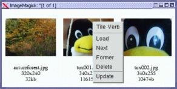

![[Top bar]](comstr.files/Topbar-ru.gif)
![[Bottom bar]](comstr.files/Bottombar-ru.gif)
| Эта заметка доступна
на: English
Castellano
Deutsch
Francais
Nederlands
Portugues
Russian
Turkce
|
автор Katja Socher
Об
авторе:
Katja - немецкий редактор LinuxFocus. Ей нравятся пинвины, фильмы,
фотография и море. Её домашнюю страничку Вы можете найти здесь.
Содержание:
- Поколдуем
- Ингридиенты
- Несколько
Заклинаний
- Изменение
высоты и ширины Ваших изображений
- Создание
обзорных изображений
- Изменение
формата изображения
- Как
поместить логотип на все Ваши изображения
- Получение
информации об изображении
- Ссылки
- Страница
отзывов
|
Колдовство над изображениями в командной строке
Резюме:
В этой статье мы рассмотрим некоторые заклинания которые может делать
волшебник ImageMagick, используя коллекцию из графических утилит в качестве
ингридиентов и командного процессора в качестве волшебной палочки.
Поколдуем
Когда-то давным-давно волшебники собирали нужные ингридиенты, смешивали их
вместе в большом котле, махали своей волшебной палочкой, бормотали заклинания...
и неожиданно кто-нибудь превращался в жабу. В наше время волшебники, также как и
все остальные в нашем обществе, сильно специализированны, и их книги заклинаний
содержат только несколько полезных заклинаний, предназначеных для очень
специфических задач. Поэтому ImageMagick это не книга с заклинаниями для
повседневного использования. По многим пунктам он не может соперничать с The
Gimp и многими другими графическими программами, но у него есть специальные
возможности, которые бывают весьма полезны.
Они позволяют автоматизировать
многие из его процессов, работая с ними из командной оболочки.
Но, перед
тем как мы раскроем Вам некоторые из заклинаний, Вы должны первым делом
ознакомиться с ингридиентами:
Ингридиенты
или Что такое ImageMagick?
ImageMagick это набор графических утилит для
работы с изображениями. Это такие утилиты как display, import, animate, montage,
convert, mogrify, identify и combine.
Display: Если Вы наберете
"display &", появится окно, в котором Вы непосредственно можете работать с
изображением. Используя меню Вы сможете открыть файл, сохранить или удалить его,
переворачивать или вращать, изменять цвета или применить эффекты, такие как
implode, emboss, put a frame around it и многие другие.
Используя
Import Вы сможете делать скриншоты содержимого экрана или конкретных
изображений или окон.
Animate используется для анимации. Вы можете
выбрать серии изображений, которые должны отображаться одно за другим или можете
просмотреть анимированный gif-файл.
Используя
Montage Вы сможете
создавать изображение при помощи какого-либо повторяющегося фрагмента или
получить изображение состоящее из кадров анимированного
gif-файла.
Convert очень полезный инструмент. С помощью его Вы сможете
преобразовать изображение в другой формат, например изображение gif в формат
jpg, или изменить размер изображения и применить много других эффектов, таких
как characoal.
Mogrify очень похожа на convert. Однако существует
большое отличие - она производит все изменения непосредственно с указанным
файлом, в то время как для convert и других утилит Вам необходимо указать файл в
который будут сохранены изменения. Вот почему я почти никогда не использую
его.
Identify отображает информацию о изображении, такую как размер
файла, имя, формат и разрешение.
Combine комбинирует два или более
изображений и сохраняет результат в другой файл-изображение. К примеру Вы можете
поместить логотип на изображение.
Для использования утилит Вам надо
набрать имя утилиты, затем опцию которую Вы хотите использовать, имя файла
изображения с которым вы хотите произвести манипуляции и имя файла изображения,
куда Вы хотите сохранить результат.
Например, если Вы хотите применить
эффект characoal для файла tux1.gif с factor = 3 и сохранить его в
tux1characoal.gif Вы должны написать:
convert -characoal 3 tux1.gif
tux1characoal.gif
После того как мы ознакомились с ингридиентами давайте
попробуем несколько заклинаний:
Несколько Заклинаний
Изменение высоты и ширины Ваших изображений
Представьте себе, что у Вас
есть куча изображений с фотографиями жертв, превращённых Вами в жаб и Вы хотите
поместить их на свою web-страничку. В целях уменьшения времени загрузки
странички Вы хотите сделать разрешение всех изображений поменьше.
С помощью
утилиты convert можно делать изображения больше или меньше или создавать
картинки для предварительного просмотра - thumbnails.
Команда
convert -geometry 60x80 image.gif out.gif
масштабирует изображение image.gif до ширины - 60 и высоты - 80 пикселей и
записывает получившееся изображение в out.gif.
Для того чтобы быстро
изменить ширину и высоту всех Ваших изображений до 80 пикселей, Вам надо
написать:
#!/bin/sh
for f in $* ;do
convert -geometry 80x80 $f t_$f
echo "<a href=\"$f\"><img src=\"t_$f\" width=\"80\" height=\"80\"></a>"
done
# end of script
(Наберите эти строчки в любом текстовом редакторе (vi, emacs, nedit,
kedit...) и сохраните их в файл mksmallimage в директорию с Вашими
изображениями. Теперь перейдите в bash и наберите
chmod 755 /home/katja/mksmallimage
(используйте имя Вашей директории вместо katja) После этого можно
использовать скрипт. Наберите /home/katja/mksmallimage xxx.jpg *.gif Скрипт
преобразует все gif-файлы и файл xxx.jpg)
Создание обзорных изображений
Допустим у Вас есть CD с коллекцией всех
жертв которых Вы превратили в жаб за последние несколько лет. Теперь один из
Ваших завистливых волшебников-конкурентов требует доказательства того, что Вы
даже его собаку превратили в жабу. Поиск этой фотографии может занять у Вас
целый день. Этого можно избежать, если у Вас есть изображение содержащее все
картинки на Вашем CD. С помощью ImageMagick его очень просто сделать:
display "vid:*.jpg"
Эта команда сгенерирует картинку на которой будут изображены все
jpg-изображения в текущей директории. Или:
display "vid:frog/*"
сгенерирует картинку со всеми изображениями в директории frog.
Нажав
правой кнопкой мыши на любом из изображений Вы получите меню в котором сможете
выбрать "Load" для того чтобы посмотреть полноразмерное изображение.

Это довольно простой способ для создания обзорного
изображения, но на большинстве компьютеров выполнение этого процесса займёт
много времени и поглотит довольно большое количество памяти, если у Вас много
изображений. Поэтому мы напишем небольшой скрипт htmlthumbnails, который будет
требовать поменьше ресурсов и в результате работы создаст web-страничку, кликнув
в которой на любой из картинок для предварительного просмотра мы получим
оригинальное изображение.
Html-код для каждого изображения должен
выглядеть примерно так:
<a href="file.gif"><img src="t_file.gif" width="60" height="80"></a>
Здесь, оригинальный файл - file.gif и его пиктограмма - t_file.gif.
Теперь мы напишем скрипт который сгенерирует пиктограммы и напишет для нас
html-код.
for f in $* ;do
convert -geometry 80x80 $f t_$f
echo "<a href=\"$f\"><img src=\"t_$f\" width=\"80\" height=\"80\">"
done
Приведенный скрипт переберёт все изображения указанные в командной строке,
сгенерирует для них пиктограммы и выведет на экран html-код. Затем мы можем
скопировать и вставить html-код в нашу web-страницу.
Для того чтобы скрипт
был окончательно завершённым мы добавим текст справки и проверку ошибок. Вот
окончательный скрипт, названный htmlthumbnails :
htmlthumbnails
(html для просмотра), htmlthumbnails
(текст для загрузки)
Изменение формата изображения
Convert может не только изменять размер
изображения, но также и его формат. Например, если Вы хотите преобразовать
gif-изображение в jpg, то Вам достаточно набрать простую команду:
convert image.gif image.jpg
Convert по расширению файла сам определяет его формат.
Для
преобразования большого количества изображений из формата jpg в формат gif
используйте:
for f in $* ;do
if echo "$f" | grep -i "jpg$" > /dev/null ; then
gif=`echo "$f" | sed 's/jpg$/gif/i'`
echo "преобразовывается $f в $gif ..."
convert 80x80 $f $gif
else
echo echo "$f не jpg файл, пропущен"
fi
done
Image Magick также поддерживает большое количество других форматов.
Как поместить логотип на все Ваши изображения
Пусть нам нужно поместить
небольшой логотип (например как тот что показан справа) на большое количество
изображений.
Логотип
должен быть небольшим прозрачным gif-изображением. Он должен быть помещён в
нижнем правом углу изображения так, как Вы видите на следующем изображении
пингвина:
Какая команда
сделает это?
Combine может быть использована для компоновки двух изображений
в одно. У этой утилиты есть несколько опций, которые определяют как именно
компоновать изображения:
combine -gravity SouthEast -compose Over img.jpg logo.gif stamp_img.jpg
Опция "gravity SouthEast" помещает logo.gif в нижний правый угол. "compose
Over" означает, что мы заменяем изображение логотипом в тех местах где они
перекрываются.
Для того чтобы получить полностью функционирующий скрипт
мы поместим команду в цикл for и опять добавим текст справки и проверку ошибок.
Вот окончательный скрипт, названный stampimages :
stampimages
(html для просмотра), stampimages
(текст для загрузки)
Получение информации об изображении
Identify отображает информацию о
типе изображения, его разрешении и размере файла. Это выглядит например так:
identify image.jpg
получим
image.jpg 340x254 DirectClass 13939b JPEG 0.1u 0:01
Как наш волшебник может это использовать? Ну, например, для разработки
web-страниц, которые отображают изображения пока страница всё еще грузится, Вы
должны указать точные размеры всех изображений. Html-код должен выглядеть
примерно так:
<img src="image.jpg" width="340" height="254" alt="[пример картинки]">
Если наши изображения различных размеров и мы точно не знаем высоту и
ширину каждого из них, мы можем взять в помощники утилиту identify. Давайте
напишем скрипт, который прочитает то что выдаст "identify" и затем сам выведет
html-строку для данного изображения. Размеры изображения это второй параметр в
строке информации выданной программой identify. Для того чтобы получить этот
параметр мы будем использовать команду awk:
identify image.jpg | awk '{print $2}'
получим
340x254
Теперь нам надо разделить эту строку на ширину и высоту. Это может быть
сделано при помощи команды:
echo 340x254 | sed 's/[^0-9]/ /g' | awk '{print $1}'
которая выдаст ширину. Высота может быть получена так:
echo 340x254 | sed 's/[^0-9]/ /g' | awk '{print $2}'
Если Вы полностью не понимаете эти команды, не волнуйтесь, просто
скопируйте их. В следующем номере LinuxFocus будет статья, в которой мы прольём
свет на все прелести shell-программирования. Наш скрипт будет выглядеть так:
file=$1
geometry=`identify $file | awk '{print $2}'`
# полученая строка может быть 563x144+0+0 или 75x98
# нам надо избавиться от плюса (+) и символа x:
width=`echo $geometry | sed 's/[^0-9]/ /g' | awk '{print $1}'`
height=`echo $geometry | sed 's/[^0-9]/ /g' | awk '{print $2}'`
echo "<img src=\"$file\" width=\"$width\" height=\"$height\">"
Для того чтобы получить окончательный вариант скрипта, мы как всегда
добавим текст справки и обработку ошибок. Вот окончательный вариант, названный
imgsrcline :
imgsrcline
(html для просмотра), imgsrcline
(текст для загрузки)
Играясь с ImageMagick я нашла некоторые различия между документацией и
реальным функционированием. Некоторые возможности не очень стабильно работают.
Тем не менее, если Вы дочитали этот текст до конца, то Вы должны были понять что
вещи описаные здесь довольно полезны. Я использовала ImageMagick-4.2.9 ,
ImageMagick-5.2.9 и ImageMagick-5.3.0 и скрипты приведённые выше работают во
всех этих версиях.
Надеюсь, что Вы получили представление о том, что можно делать при помощи
ImageMagick и будете использовать эти скрипты, а возможно даже и начнёте
создание своих собственных заклинаний.
Удачи!
Ссылки
- Установка: Возможно ImageMagick уже установлен в Вашей системе, так как он
обычно включён во все известные дистрибутивы Linux. Но в случае если Вы хотите
получить последнюю версию - Вы можете загрузить её отсюда: http://www.imagemagick.org/
- Для более подробной информации об утилитах ImageMagick Вы можете
использовать man (например, наберите man convert чтобы найти информацию об
утилите convert) или почитайте текст на том-же web-сайте.
- Если Вы пока не считаете себя ассом shell-программирования наберите в
поисковом сервере google запрос bash и в результатах поиска Вы сможете найти
много обучающих текстов по shell-программированию, которые удовлетворят все
Ваши запросы. Можете также подождать следующего номера LinuxFocus и там
прочитать статью о shell-программировании.
Страница отзывов
У каждой заметки есть страница отзывов. На этой
странице вы можете оставить свой комментарий или просмотреть комментарии других
читателей.
Webpages
maintained by the LinuxFocus Editor team
©
Katja Socher, FDL
LinuxFocus.org
Click here to report a fault or send a comment to
LinuxFocus
|
Translation
information:
|
2001-08-16, generated by lfparser version 2.17